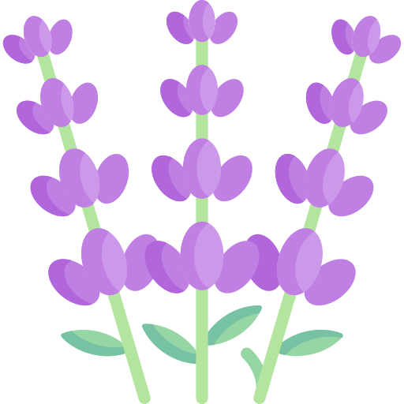
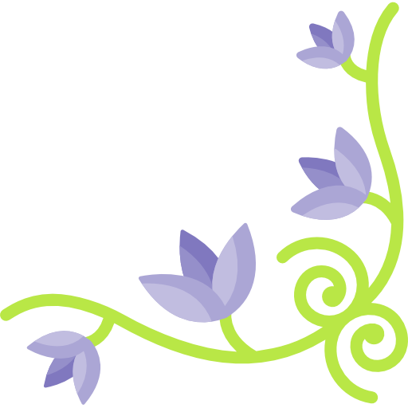

Octubre 15 de 2025
Querida Betty: 🙈
Hoy me cuesta escribir estas líneas porque, aunque me alegra saber que vienen nuevos caminos para ti, también
siento la despedida de una gran compañera y amiga. Durante el tiempo que compartimos en el trabajo,
construimos un lazo muy bonito, lleno de momentos sinceros, apoyo y muchas risas que sin duda voy a extrañar.
Quiero que sepas que valoro mucho tu amistad y agradezco todo el apoyo que me brindaste. Siempre tuviste la
disposición de ayudar, de compartir tus conocimientos y de hacerlo con una sonrisa, y eso dice mucho de la
gran persona que eres.
Adonde quiera que vayas, vas a brillar. Eres una persona muy talentosa, comprometida y con un gran corazón,
cualidades que te van a llevar muy lejos. Estoy seguro de que el nuevo camino que emprendes te traerá muchas
satisfacciones y nuevas oportunidades para seguir creciendo.
Gracias por todo, Beatriz —por tu cercanía, por tu alegría y, sobre todo, por tu amistad—. No es un adiós,
sino un hasta pronto. Espero que sigamos en contacto y que la vida nos vuelva a cruzar pronto.
Con mucho cariño,
Alfonso Godinez

